Project 4A: Image Warping and Mosaicing
Recovering perspective, rectifying planes, and joining personal photographs through projective geometry.
A.1: Shoot the Pictures
All eight input photographs come from the supplied personal photo archive. Three pairs were selected for substantial overlap and predominantly distant, static features. EXIF capture times place the paired exposures 9, 67, and 16 seconds apart. These are archived images, so a precisely fixed camera center was not documented. The low fitted reprojection errors support an approximate projective alignment, but do not prove pure camera rotation. No generated or pre-stitched images are used.
Light across the valley
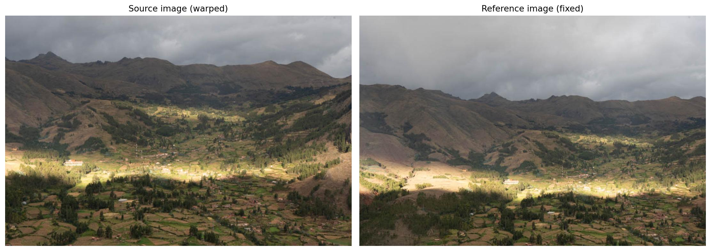
2026untitled-310.jpg (2026:05:26 15:32:41) / 2026untitled-347.jpg (2026:05:26 15:32:50)
Bridges above the river
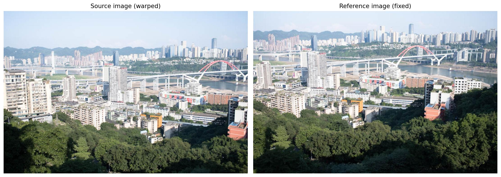
2023未命名-32-3.jpg (2023:06:25 17:33:06) / 2023未命名-39-2.jpg (2023:06:25 17:34:13)
The snowy valley
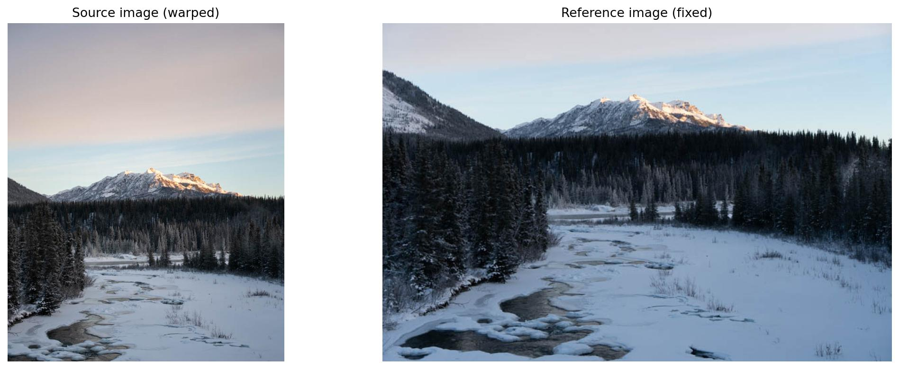
2025untitled-164.jpg (2025:11:24 16:48:50) / 2025untitled-166.jpg (2025:11:24 16:49:06)
A.2: Recover Homographies
For each pair, 16 spatially distributed correspondences are stored in JSON. SIFT supplies candidate locations; a small custom RANSAC loop rejects outliers. The displayed pairs are the final inputs to computeH. This assistance is separate from the required solver: computeH constructs the 2N by 8 system and uses numpy.linalg.lstsq. Coordinates are centered and scaled to mean distance sqrt(2) before solving; H is then denormalized and divided by H[2,2]. No built-in homography solver is used.
u = (h11*x + h12*y + h13) / (h31*x + h32*y + 1) v = (h21*x + h22*y + h23) / (h31*x + h32*y + 1) [x y 1 0 0 0 -u*x -u*y] h = u [0 0 0 x y 1 -v*x -v*y] h = v h = [h11 h12 h13 h21 h22 h23 h31 h32]^T minimize ||A h - b||^2; H = inv(T_dst) H_norm T_src
With only four nondegenerate pairs, eight equations can determine H exactly. Extra points reduce sensitivity to click or feature-localization noise. Collinear or coincident configurations are rejected. The errors below are training residuals on the selected matches, not independent estimates of full-image accuracy.
Light across the valley
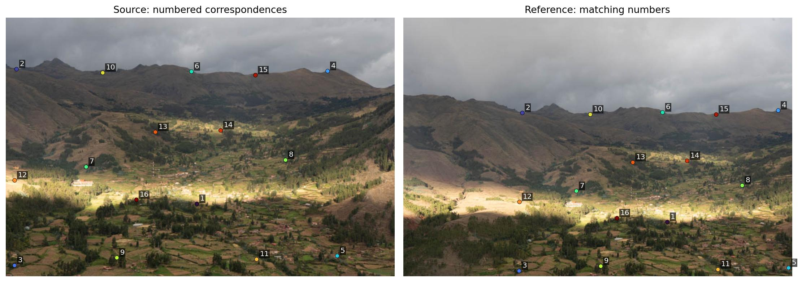
H (source to reference): [ 0.7519448 -0.0175255 219.6430052 ] [ -0.0295963 0.7832016 108.0441650 ] [ -0.0000894 -0.0000356 1.0000000 ]
N = 16 · reprojection RMSE = 0.313 px · maximum residual = 0.574 px
Bridges above the river
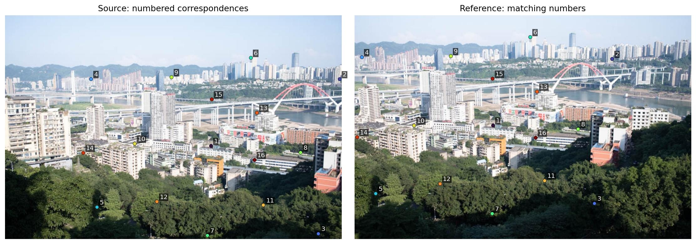
H (source to reference): [ 1.2417571 0.0611156 -234.3550110 ] [ 0.0351237 1.1790237 -76.2381786 ] [ 0.0002835 0.0000929 1.0000000 ]
N = 16 · reprojection RMSE = 0.326 px · maximum residual = 0.630 px
The snowy valley
H (source to reference): [ 0.8741797 0.0104561 99.7889682 ] [ -0.0020301 0.8920146 -183.3547950 ] [ -0.0000057 0.0000614 1.0000000 ]
N = 16 · reprojection RMSE = 0.630 px · maximum residual = 0.980 px
A.3: Warp and Rectify Images
H maps source coordinates into the reference plane. Transform the four source corners to determine inclusive canvas bounds, retain the world-coordinate origin, and apply inverse H to every destination pixel. Divide by the homogeneous coordinate before sampling. Out-of-bounds samples receive a false validity mask, while legitimate black pixels stay valid. A projective horizon crossing or excessive canvas size raises an error.
Nearest neighbor rounds each inverse-mapped coordinate to one source pixel. Bilinear interpolation uses the weighted sum of the surrounding four pixels: (1-dx)(1-dy)I00 + dx(1-dy)I10 + (1-dx)dy I01 + dx dy I11. The closeups show blocky steps with nearest neighbor and smoother, slightly softer edges with bilinear. Neither method reconstructs detail absent from these small archived JPEGs, and bilinear alone is not a complete antialiasing filter for strong downsampling.
Window grid
A rectangular group of panes on an oblique building facade. Grid intersections define four manually selected corners; a front-facing target removes the slant. Target aspect ratio is assumed because physical dimensions were not measured.
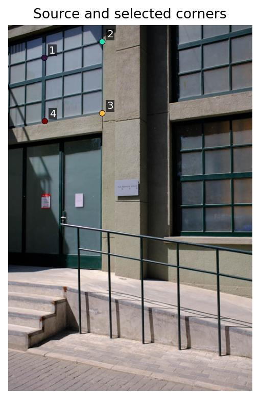
Source corners (x, y): [[75.5, 68.5], [197, 34.75], [197, 185], [76.5, 201.5]] Target corners: [[0, 0], [479, 0], [479, 559], [0, 559]] H: [ 4.7927870 -0.0360360 -359.3869510 ] [ 1.2473300 4.4903881 -401.7650059 ] [ 0.0011211 -0.0000752 1.0000000 ]
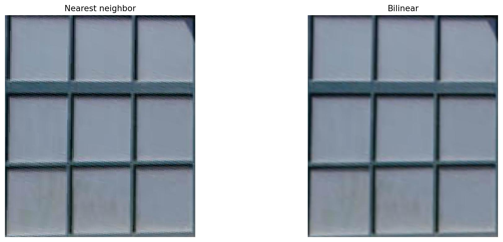
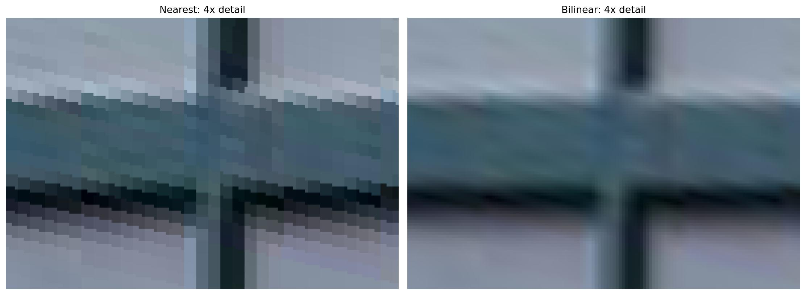
480 × 560 output · nearest 8.91 ms · bilinear 22.65 ms · ratio 2.54×
Framed glass panel
A framed glass panel viewed obliquely. Four inner frame corners are mapped to an axis-aligned rectangle. Target aspect ratio is assumed because physical dimensions were not measured.
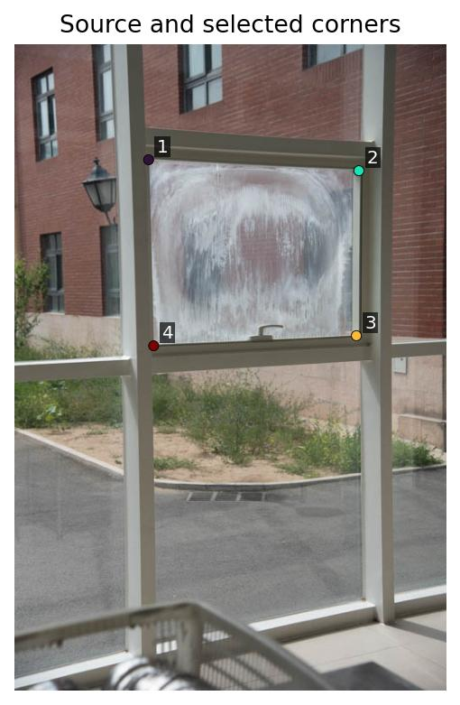
Source corners (x, y): [[159, 137], [409, 150], [406, 346], [165, 358]] Target corners: [[0, 0], [639, 0], [639, 519], [0, 519]] H: [ 2.0717659 -0.0562470 -321.7049408 ] [ -0.1076497 2.0701858 -266.4991629 ] [ -0.0004132 -0.0001440 1.0000000 ]
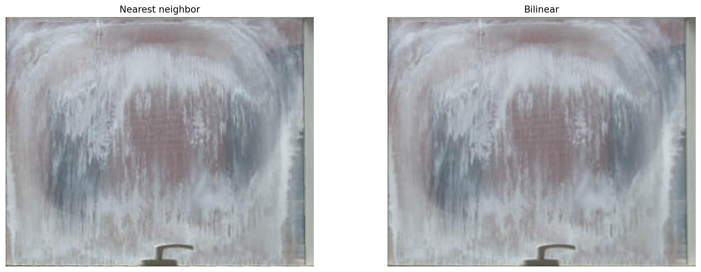
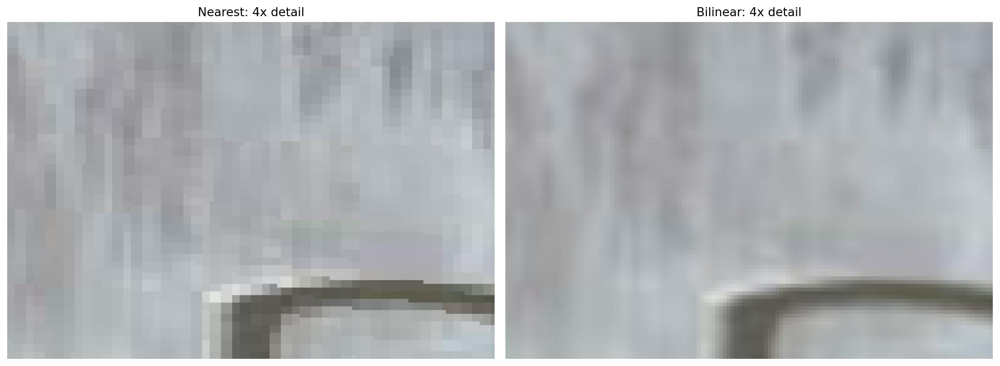
640 × 520 output · nearest 12.49 ms · bilinear 30.22 ms · ratio 2.42×
Timings are the median of five CPU runs after one warmup and exclude disk I/O. Nearest is faster because it reads one source pixel; bilinear reads four and computes weights. These values depend on hardware and output size.
A.4: Blend Images into Mosaics
Each source receives a feather weight proportional to its distance from the nearest image edge, with a small positive boundary value. Images and weights are inverse-warped into one common canvas. The output is sum(weight * color) / sum(weight), evaluated only where total weight is positive. Weights are normalized locally, so singly covered regions keep their original brightness. The comparison figures show the same registered images with hard overwrite and with feathering. Transparent pixels outside the union are preserved in the PNG results.
C(p) = sum_i [alpha_i(p) * I_i(p)] / sum_i alpha_i(p)
Light across the valley
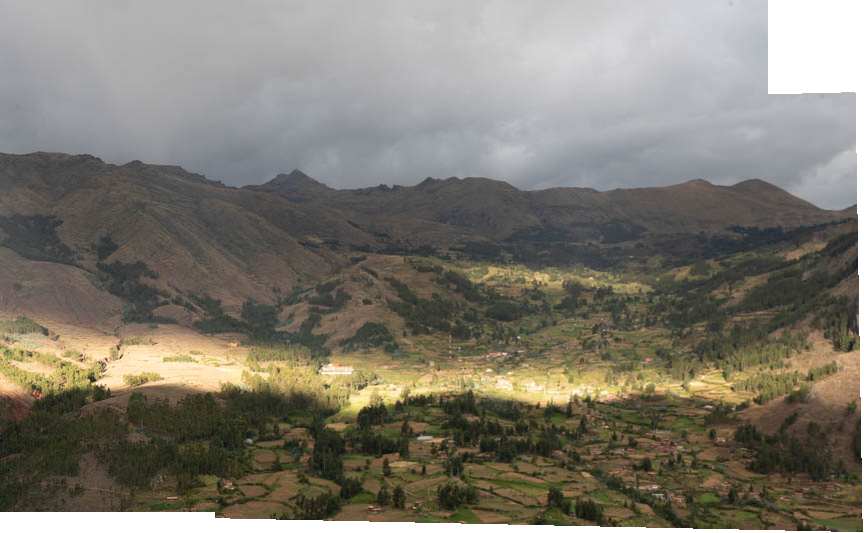
The mountain ridgeline and terraces align across the overlapping views. Feathering softens the transition through the illuminated fields, while changing cloud illumination leaves a visible tonal transition in the sky. The canvas includes the valid extents of both views.
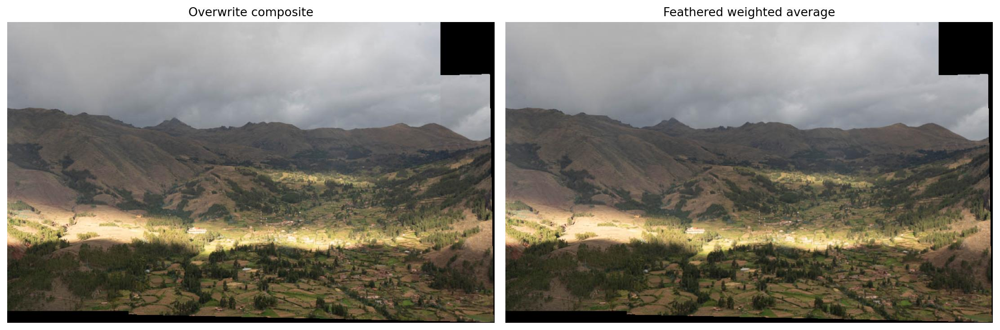
Canvas 864 × 533 · origin [0, 0] · compositing 0.151 s
Bridges above the river
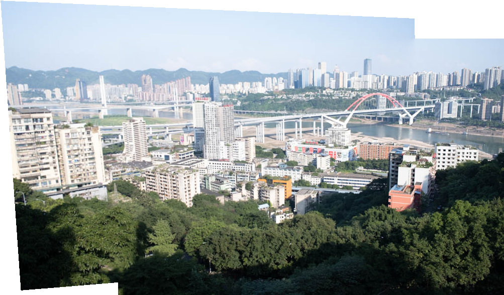
The bridge, buildings, and distant skyline register well. The second photograph extends the view toward the right. The moving cable car is not a reliable correspondence, so matches were taken from static scene features. Small differences in foreground foliage and exposure remain.
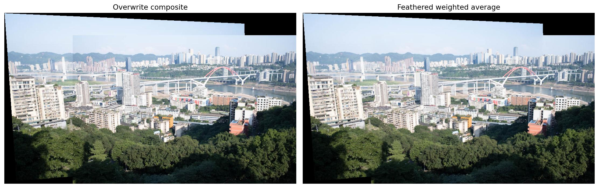
Canvas 1003 × 589 · origin [-235, -77] · compositing 0.176 s
The snowy valley
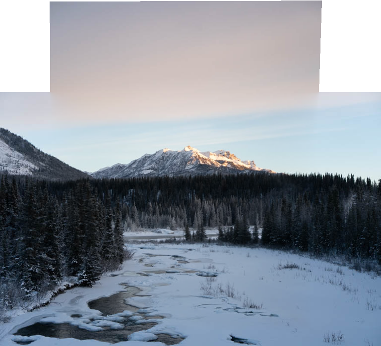
A portrait image contributes extra sky and foreground to a landscape reference. The mountain and treeline align, producing a vertical mosaic. The sky retains a color transition between the two exposures; feathering blends intensities but does not perform exposure correction.
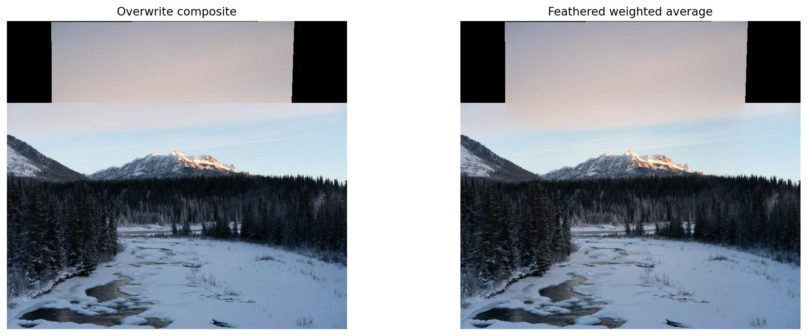
Canvas 768 × 698 · origin [0, -186] · compositing 0.158 s
Implementation and Reflection
The separation between geometry, resampling, and blending makes errors easier to diagnose. A low correspondence residual does not guarantee a seamless panorama: parallax, lens distortion, moving objects, and exposure changes can violate the single-homography model or photometric assumptions. More careful fixed-center capture and locked exposure would improve these archived inputs. The selected pairs are sufficient for the displayed examples; no claim is made that the camera center was exactly fixed.
Ten deterministic numerical tests cover homography recovery with and without noise, degenerate correspondences, interpolation values, identity and translated warps, linear-ramp resampling, valid black pixels, feathered overlap, and projective-horizon rejection. All pass. The optional A.5 extension is not included; this report targets the required CS180 Part A deliverables.
The submitted code runs with python main.py from the code/ folder. Core functions are in utils.py, with saved correspondences in config.json and inputs in data/.